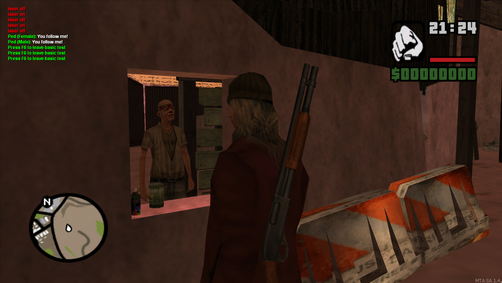
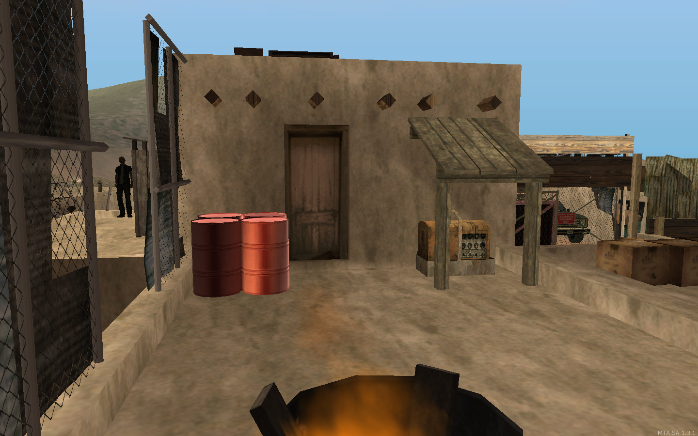

Wastelanders
Wastelanders là một “nhóm dân quân tự vệ tự xưng”, sống trong và xung quanh Tierra Robada. Họ có trụ sở tại một thị trấn tồi tàn được xây dựng trên sườn của mỏ đá Hunter cũ và có tiền đồn ở các địa điểm sa mạc khác.
Phân nhánh
1. Scavengers
Họ là thành viên chính của phe Wastelander. Họ quan tâm đến giao dịch và cung cấp dịch vụ trên toàn Tierra Robada. Họ thường trung lập với các phe phái khác, nhưng không có ý định giết người cho đến khi chúng cản trở các hoạt động của nhóm. Để trở thành Scavenger Wasteland, bạn bắt buộc phải sống hơn 1 giờ, danh tiếng trên -20 và phải biết ít nhất một Kỹ năng phụ hoặc là thành viên Giáo phái (The Cult).
2. The Cult
Họ là một nhóm tôn giáo, được lãnh đạo bởi một Tiên tri và họ coi đó là nhiệm vụ thiêng liêng của họ, để làm sạch thế giới của thây ma - những con quỷ thoát khỏi địa ngục đen tối nhất, được gửi đến để hành hạ nhân loại vì tội ác của họ. Họ tự gọi mình là “Cultists” thay vì
“The Divine Church of Redemption by Fire in the End Days”, một tên mà cư dân San Andreas khác nghĩ nó quá dài để nhớ. Những người chơi khác coi Thây ma chỉ là những mối đe dọa nhỏ, nhưng không được đánh giá thấp nó, vì chúng có thể là kẻ thù nguy hiểm. Phải mất vô số hỏa lực để tiêu diệt nhiều thây ma! 
Để tham gia The Cult, bạn bắt buộc phải có số lượng tiêu diệt zombie lớn hơn 100, thời gian sống 2 giờ và danh tiếng trên -10.
Để trở thành Tiên tri, bạn phải có số lượng tiêu diệt zombie lớn nhất trong lịch sử nhóm (điều này có nghĩa là Nhà tiên tri trước đó đã chết, đã chuyển phe phái hoặc thậm chí từ bỏ chơi cùng nhau và xóa nhân vật của mình - bạn vẫn phải đánh bại số điểm của anh ấy).